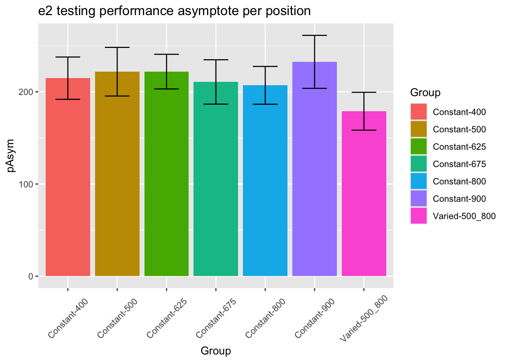

Appendix
Appendix - Project 1
exponential learning models fit to individual subjects
Group comparison of learning rate fits
First vs. second half of testing stage

Group Comparison for asymptote-starting performance
Relative distance and under/overshooting
Reviewer 3 Absolute versus relative distance: From a methodological standpoint, I understand the need to differentiate these two types of distance. However, from a theoretical perspective there may be some issue in differentiating these two concepts. Schema theory relies on relative (or invariant) information to inform the motor program. However, both distances would be important to an instance or exemplar representation. You may want to consider commenting on this issue.
Reviewer 2 For the same reason, the plots showing improvement during training could be due to participants learning the task, rather than fine motor skills. Although task learning and motor learning are impossible to separate cleanly, the common practice in the field is indeed to offer practice trials to reduce the task learning aspects. The authors should address this.
In addition to absolute errors (which is related to variance), the authors should also provide other measures of performance, e.g., the mean of the signed errors, so that readers have a better idea whether there was any meaningful over- or undershooting.
experiment 1 training - relative distances


=========================================================================
conditType devianceDirection 610 760 910
-------------------------------------------------------------------------
constant Overshoot 311.84(307.92)
constant Undershoot 188.05(163.62)
varied Overshoot 211.69(234.97) 360.14(322.01)
varied Undershoot 107.35(81.21) 244.85(196.47)
-------------------------------------------------------------------------
======================================================
conditType 610 760 910
------------------------------------------------------
constant 121.03(269.17)
varied 39.91(178.12) 150.53(290.04)
------------------------------------------------------
====================================================================
conditType 610 760 835 910
--------------------------------------------------------------------
constant 7.13(124.02) 107.02(218.49) 142.42(252.34) 122.92(282.58)
varied 3.19(96.67) 92.1(173.9) 103.84(214.4) 108.12(234.59)
--------------------------------------------------------------------experiment 2 training - relative distances


Experiment 1 Testing - relative distances

====================================================================================================================================
conditType2 msdu_610 msdu_760 msdu_835 msdu_910 msds_610 msds_760 msds_835 msds_910
------------------------------------------------------------------------------------------------------------------------------------
Constant Training 136.27(84.29) 191.65(112.65) 219.46(139.91) 276.75(153.09) 25.28(158.98) 50.82(217.48) 73.14(250.93) 50.76(313.77)
Varied Training 105.12(51.39) 149.37(93.4) 180.54(129.52) 198.64(137.84) 13.85(116.87) 50.59(169.59) 50.52(217.39) 49.94(237.71)
------------------------------------------------------------------------------------------------------------------------------------
=========================================================================
Condition 610 760 835 910
-------------------------------------------------------------------------
Constant Training 25.28(158.98) 50.82(217.48) 73.14(250.93) 50.76(313.77)
Varied Training 13.85(116.87) 50.59(169.59) 50.52(217.39) 49.94(237.71)
-------------------------------------------------------------------------Experiment 2 Testing - relative distances

Experimenet 1 - intermittent testing

======================================================================================================
Condition 610_First Half 760_First Half 910_First Half 610_Second Half 760_Second Half 910_Second Half
------------------------------------------------------------------------------------------------------
constant 206.64(82.08) 286.51(121.07) 406.93(145.2) 187.2(55.24) 238.21(95.16) 313.27(114.86)
varied 195.68(78.58) 278.9(105.37) 318.53(134.81) 177.79(70.82) 224.98(108.04) 276.86(110.5)
------------------------------------------------------------------------------------------------------Training plots - Experiment 1


Not in manuscript
fit to testing performance averaged across positions


statistical tests for starting performance
ANOVA Table (type III tests)
Effect DFn DFd F p p<.05 ges
1 conditType 1 206 3.04 0.083 0.015
statistical tests for asymptote
ANOVA Table (type III tests)
Effect DFn DFd F p p<.05 ges
1 conditType 1 206 3.38 0.067 0.016
Appendix - Project 2 - Experiment 1
Posterior Predictive Distributions

Empirical vs. Predicted

Different Aggregations


:::